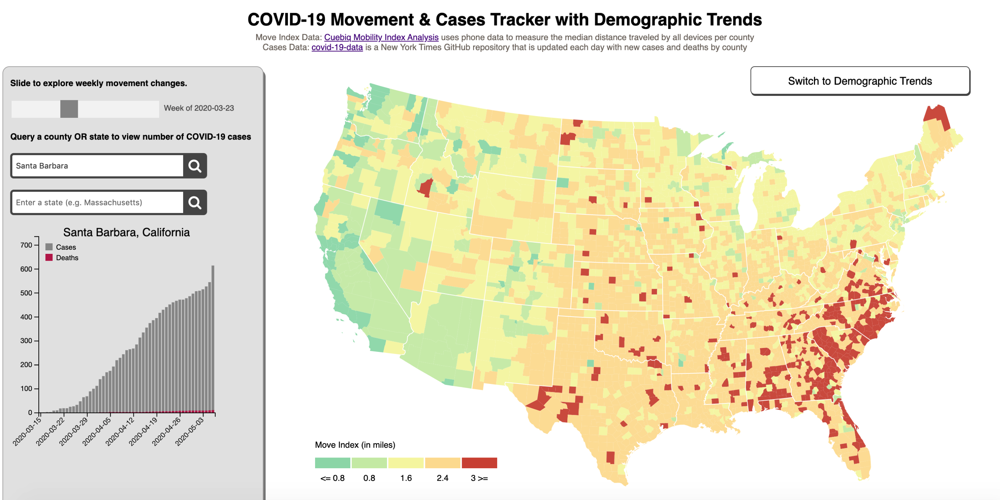

COVID-19 Data Visualization

Description
Our COVID-19 tracker application serves as a means for people to gain insights into pandemic trends through multiple types of data. The data comes from 3 disparate sources: Cuebiq Mobility Insights for mobility / movement data, the New York Times for daily reports on Coronavirus cases and deaths in the U.S., and the United States Census Bureau for demographic data. The central component of the visualization is the chloropleth map, in which move index data (collected from phones) is encoded by color, thus indicating how different places in the U.S. have responded to the pandemic crisis by way of social distancing as time has progressed.Details
Date: March 2020 - May 2020Team: Sejal Dua, Sook-Hee Evans, Sammy Stolzenbach
Tags: Data Visualization, Academic
Language(s): Javascript, Python, HTML, CSS, Shell
Tools & Technologies: D3 Library, API calls, Geolocation Detection